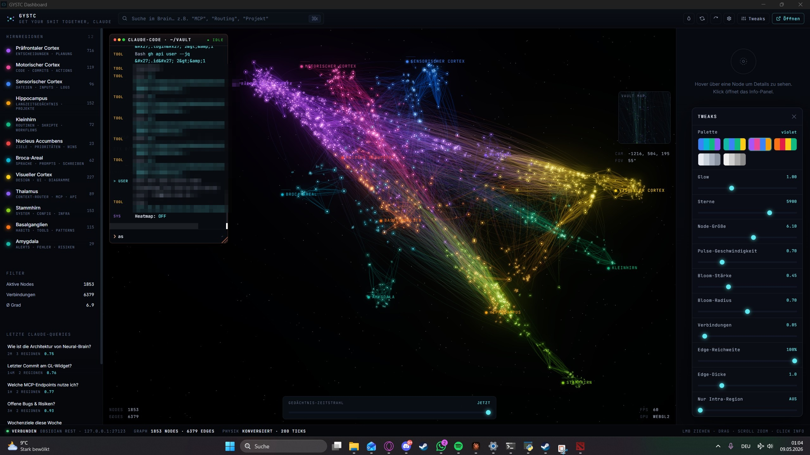

// runtime
Python 3.11+
CPython, packaged as a single signed EXE.
+----------------------------+ | MEM[Claude] = ∅ | | > start session #47 | | > "explain project again" | | > ... | | GYSTC.attach() | | MEM[Claude] := vault/ | | > "based on march decs..."| +----------------------------+
Your AI forgets everything. Every. Single. Session. This fixes that — a local MCP server that gives Claude a persistent long-term memory across sessions, projects, and months.
You've explained your project structure to Claude 50 times. It forgets your architecture decisions. It doesn't know your conventions. Every session — finally productive — starts at zero.
$ ./gystc-setup.exe
→
vault_path = "D:/notes/work"
→
claude > auto_context: ok
[ 14:02 ] you > let's keep working on the auth refactor. [ 14:02 ] claude > Sure! Quick question — can you explain your project structure again? What auth library are you using? Where do tokens live? Any conventions I should follow? [ 14:03 ] you > ......
[ 14:02 ] you > let's keep working on the auth refactor.
[ 14:02 ] claude > Based on your architecture decisions
from March, you're using session
cookies (not JWT) and the helper lives
in lib/auth/session.ts. Want me to
extend the rotation logic we sketched
last Tuesday?
Every tool is exposed via Model Context Protocol. Claude calls them autonomously — no slash commands, no manual triggers. Consolidated from 16 to 8 in v1.1.0 for faster, more reliable responses.
Unified search: semantic (FAISS), keyword (FTS5), and graph traversal in one call. Pass a query, file paths, or both. Falls back to keyword-only if the model is still loading.
When Claude needs knowledge about any topic, project, or prior decision.
Save a new note to the vault. Automatically embeds it, classifies it into a brain region, versions old content, and indexes it for future retrieval.
When Claude discovers something worth remembering across sessions.
Explore connections from a specific note. Follows backlinks and embedding similarity to surface related knowledge you didn't explicitly search for.
When exploring how concepts connect or finding adjacent knowledge.
List recently changed notes, ordered by modification time. Instant — no model needed. The go-to tool while the embedding model is still loading.
When Claude needs to understand recent vault activity or changes.
Fast health check — note count, vector count, model status, region distribution. Always instant, responds in under 10ms.
Quick sanity check that the MCP server and vault are operational.
List all 12 brain regions with note counts, descriptions, and customization options. Shows how the vault is organized.
When Claude needs to understand the vault's structure or pick a region.
Classify notes into brain regions using keyword rules (no API key needed). Supports single-note, batch reclassify, and feedback corrections — all via the action parameter.
When notes need to be assigned to or moved between brain regions.
View history, diff against previous versions, or rollback a note. All versioning in one tool via the action parameter.
When investigating changes or restoring a previous version.
The vault is partitioned into 12 named regions. Segmental search routes queries to the relevant ones — not a flat sweep over everything you've ever written. The metaphor is anatomical; the goal is structure and performance, not simulating a brain.
GYSTC is a local MCP server that gives Claude persistent long-term memory. It indexes your Obsidian vault (or any folder of markdown files), builds a semantic search index, and exposes tools that let Claude retrieve, store, and connect knowledge across sessions.
No cloud. No accounts. Everything runs on your machine, talks over stdio, and never phones home.
Download the EXE (Windows) or .app (macOS) from the release page. Run it. The setup wizard walks you through pointing at your vault and registering the MCP server with Claude.
That's it. Next time you open Claude, it has memory.
brain_retrieve — hybrid search + file context + graph traversal (absorbed brain_context)brain_store — save new knowledge as a notebrain_recent — see recently modified notesbrain_related — find connected topics via backlinks + embeddingsbrain_classify — classify, reclassify, or teach the classifier (merged 3 tools)brain_versions — history, diff, and rollback in one tool (merged 3 tools)brain_regions — list all 12 regions with statsbrain_status — vault health checkNotes are classified into 12 brain regions by function, not topic. Architecture decisions go to the Prefrontal Cortex. API endpoints go to Motor Cortex. Config files go to Brainstem. When Claude searches, it targets the relevant regions first — not a flat sweep of everything.
A SessionStart hook fires every time you open Claude. It reads your
current git context and pulls relevant vault notes automatically. Claude starts
every session already knowing what you're working on.
The EXE includes a 3D brain visualization built with Three.js. Your vault rendered as a force-directed graph — nodes are notes, edges are backlinks, colors are regions. Click any node to open the note in Obsidian.
Everything is free — the binary and the full source. The code is public on GitHub: read it, build it, self-host it. No paywall. If GYSTC saves you time and you want to support development, there's an optional Patreon — but the code is yours either way.
brain_mcp serve is now a thin stdio↔HTTP proxy: it auto-starts the daemon and forwards to it; if the daemon dies mid-session the proxy respawns it and never hangs the clientserve --direct keeps the previous in-process stdio server as a fallbackrequirements.txt installs a runnable server again (it was missing every core MCP dependency)brain_retrieve falls back to keyword search instantly instead of blocking on model load; brain_related falls back to backlinksstatus/recent/regions)brain_mcp is now bundled in the EXE — Dashboard search, stats, reindex and settings work againconfig.json keys (merge-on-write)psutil is now a declared dependency — zombie-process cleanup works on clean installsbrain_classify apply returns a clear error when the note isn't stored, instead of a silent no-oprun_in_executor + 30s timeout — impossible to block the event loopbusy_timeout=5000ms + wal_autocheckpoint — eliminates "database locked" under concurrent access/api/search endpoint merges with local resultswait_ready() moved from async event-loop to executor thread — this was the root cause of all MCP hangsWAIT_READY_TIMEOUT increased 10s → 20s (model load takes ~11s, timeout was too short)_ready.set() moved to finally block — no more permanent hang on abnormal exitHF_HUB_OFFLINE=1 — skips ~20 HTTP cache-validation requests on every startup_handle_file_change now checks is_ready before embedding — prevents blocking on model lockbrain_store skips embedding cleanly when model not loaded (was silently broken)reranker: "cross-encoder" in configis_ready check now detects failed model loads correctlywait_ready() moved from async event-loop to executor thread_load() now always signals readiness (via finally), even on crashasyncio.wait_for(timeout=60) — returns error instead of hanging foreveris_ready check after wait_ready to detect failed model loadingasync + run_in_executorbrain_store skips embedding when model not loaded yet (graceful fallback)--in-process-gpu Chromium flag (60fps preserved)
gystc-windows.zip
Extract the ZIP, open the GYSTC Dashboard folder, run GYSTC Dashboard.exe. The setup wizard walks you through vault selection, MCP install, and hook registration. Requires Python 3.11+ for the MCP server.
gystc-macos.dmg
Open the DMG, drag GYSTC Dashboard.app to Applications. On first launch, the setup wizard configures your vault and installs the MCP server via pip. Requires Python 3.11+.